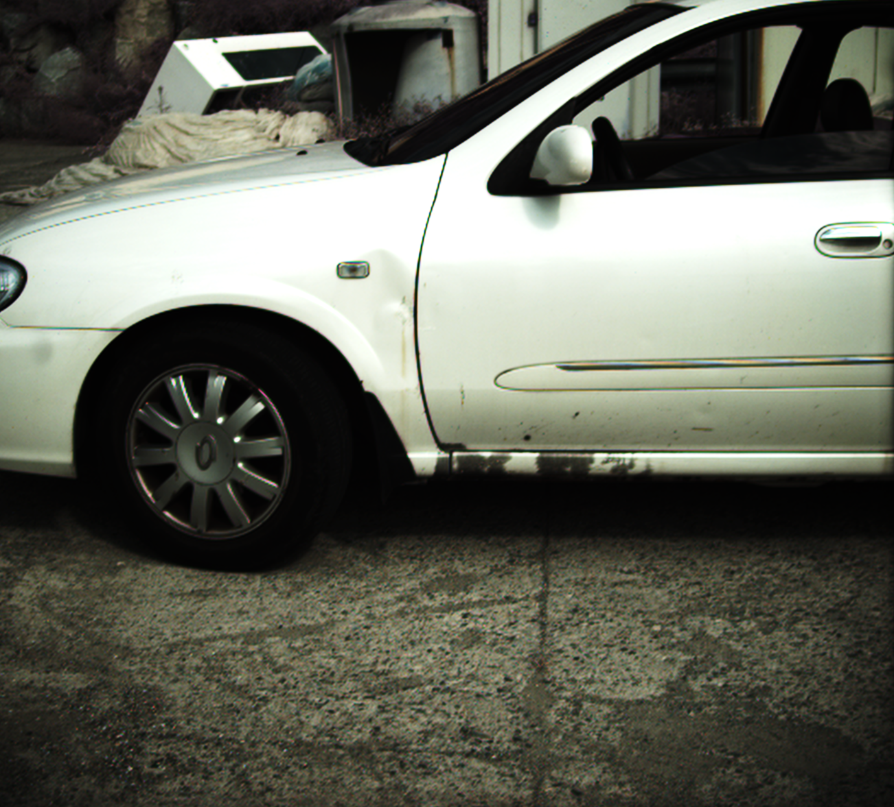
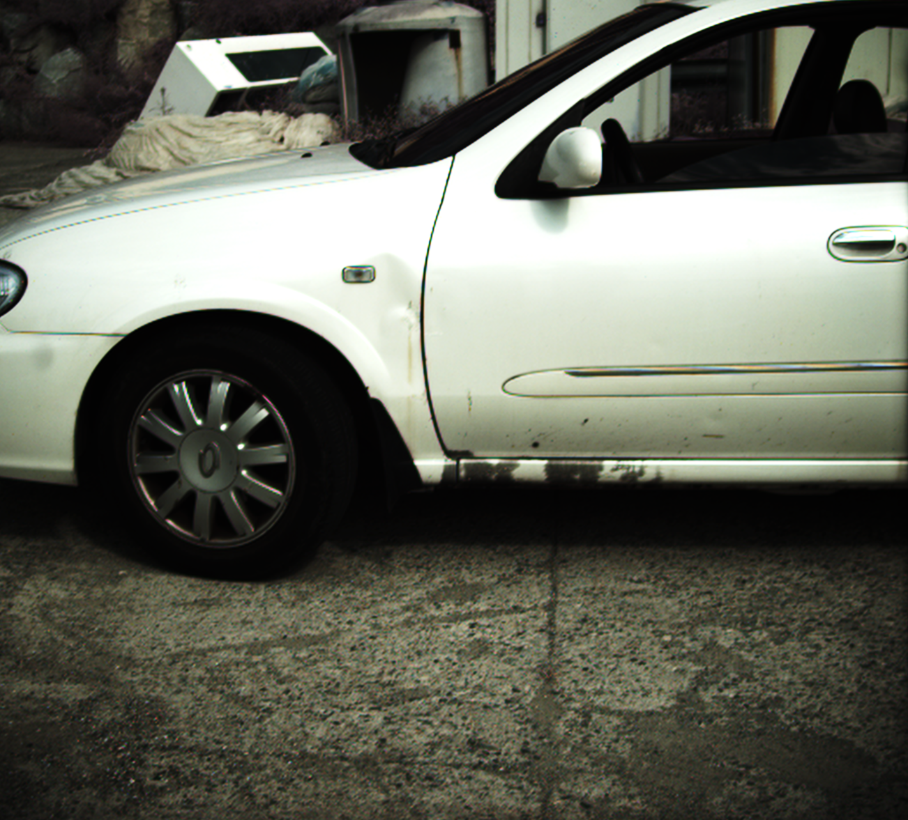

Image datasets are essential not only in validating existing methods in computer vision but also in developing new methods. Many image datasets exist, consisting of trichromatic intensity images taken with RGB cameras, which are designed to replicate human vision. However, polarization and spectrum, the wave properties of light that animals in harsh environments and with limited brain capacity often rely on, remain underrepresented in existing datasets. Although there are previous spectro-polarimetric datasets, they have insufficient object diversity, limited illumination conditions, linear-only polarization data, and inadequate image count. Here, we introduce two spectro-polarimetric datasets, consisting of trichromatic Stokes images and hyperspectral Stokes images. These datasets encompass both linear and circular polarization; they introduce multiple spectral channels; and they feature a broad selection of real-world scenes. With our dataset in hand, we analyze the spectro-polarimetric image statistics, develop efficient representations of such high-dimensional data, and evaluate spectral dependency of shape-from-polarization methods. As such, the proposed dataset promises a foundation for data-driven spectro-polarimetric imaging and vision research
@inproceedings{jeon2024spectral,
title={Spectral and Polarization Vision: Spectro-polarimetric Real-world Dataset},
author={Jeon, Yujin and Choi, Eunsue and Kim, Youngchan and Moon, Yunseong and Omer, Khalid and Heide, Felix and Baek, Seung-hwan},
booktitle={Proceedings of the IEEE/CVF Conference on Computer Vision and Pattern Recognition},
year={2024}
}
 
